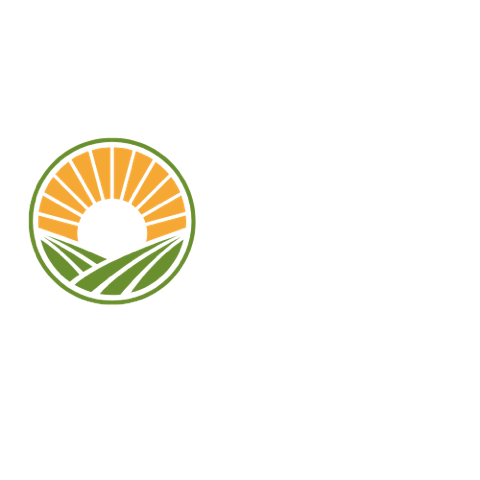
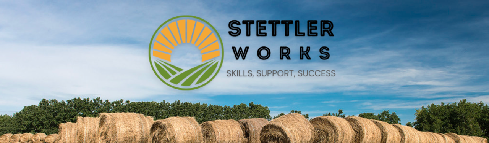

☰
Home
Business Resource Hub
Small Business Resources
Agriculture Resources
Support Tools
Agriculture Programs and Services
Agri-Tech and Tools
Connect with Experts
Find a Business
Economic Dashboard
Training & Skills Development
Training Calendar
Local Resources
Sustainability and Workforce Projects
Volunteer and Contribute
Available Properties
Community Infrastructure
Zoning and Policy Information
Job Supports
Job Ready Tools & Employer Listing for Small Business
Job Ready Tools & Employer Listing for Agriculture
Job Board
Support Centre
Ask a Question
FAQs

Business Resource Hub
Small Business Resources
Agriculture Resources